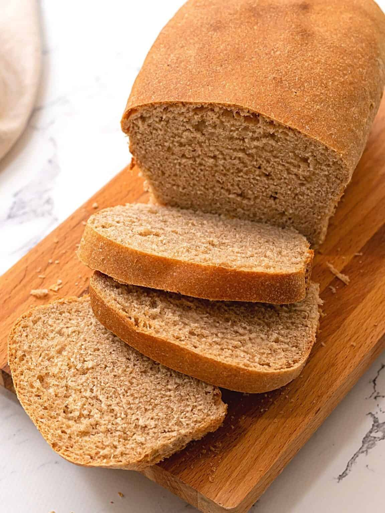

Honey Whole Wheat Bread

This recipe is made with 100% whole wheat! Your family and friends will never want to buy whole wheat bread from the store again, after trying this bread.
This recipe will yield one loaf or two loaves of bread.Store the bread in an airtight sealed container so it stays fresh for 4-5 days
Original Recipe
Ingredients
- 4 1/2 cups whole wheat flout(576 grams)
- 1 1/2 cups warm water (110-115 degrees F)
- 1/3 cup olive oil
- 1/3 cup honey
- 1/4 cup vital wheat gluten (optional)
- 2 teaspoons kosher salt
- 1 tablespoon active dry yeast
Instructions
- Sprinkle the yeast over the water and mix in the honey. Let that sit for 5 minutes, or until the mixture gets creamy and a bit bubbly.
- In a large mixing bowl or bowl fitted for a stand mixer, mix together salt, vital wheat gluten, and 3 cups of flour
- Add the oil to the water mixture. Make a well in the flour mixture and pout in the water mixture.
- Mix by hand with a wooden spoon or on low speed using the stan mixer fitted with a dough hook, until the flour is completely moistened.
- Stir in an additional 3/4 cup of flour into the dough mixture. If the dough is still sticky add up to another 3/4 cup of flour, adding only 1/4 cup at a time, until the dough is not sticky and easily pulls away from the sides of the bowl.
- Turn the stand mixer to medium-low and knead the dough for 5-10 minutes, or until the dough is smooth and shiny. Alternatively, to knead the dough by hand, turn the dough out onto floured work surface. Fold the dough over itself and repeat, kneading for 10-15 minutes, or until the dough is smooth and elastic.
- Place the knead dough into a large mixing bowl that has been lightly greased with oil. Cover the bowl with plastic wrap or a kitchen towel and let rise in a warm spot until doubled in size. This should take about 1 hour, depending on the temperature and humidity of your kitchen.
- Once the dough has doubled, punch dough down and shape in one 2-pound loaf or into two 1-pound loaves.Place the loaf or loaves into a greased loaf pan. Use a 9x5" pan for a 2-pound loaf, and two 8x4 loaf pans for two 1 pound loaves. Cover the pans with towel or plastic wrap, and let rise until doubled again.
- Once doubled, bake the bread at 350 degrees F for 35-40 minutes for a 2-pound loaf and 25-30 minutes for a 1-pound loaf, or until your bread reaches an internal temperature of 190 degrees.
- Allow the bread to cool in pan(s) for 10-15 minutes and then remove the bread from the pan and allow it to cool fully on a cooling rack.
Breads